FromHOMEIndia
ToIXLLeh · Ladakh
IXLGate · Soon
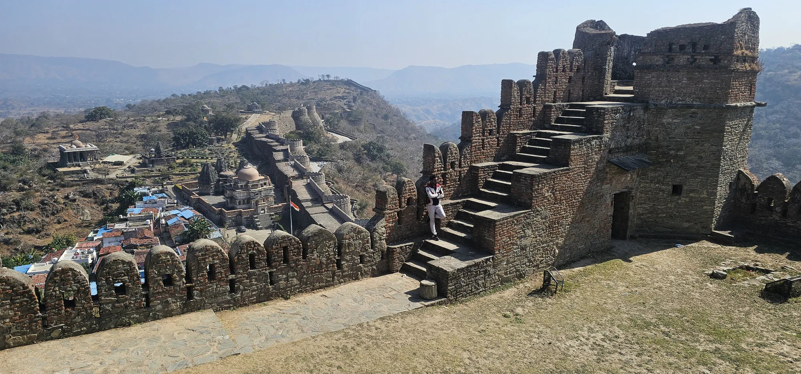
Kumbhalgarh · Rajasthan
I mean — who doesn't?
I love adventure.
I've explored a lot of India so far — forts that guard the Sahyadris, temples older than empires, palaces, beaches and long winding roads. Every trip leaves me with a story, a photo or two, and at least one tip I can't wait to pass on.
— Saurabh
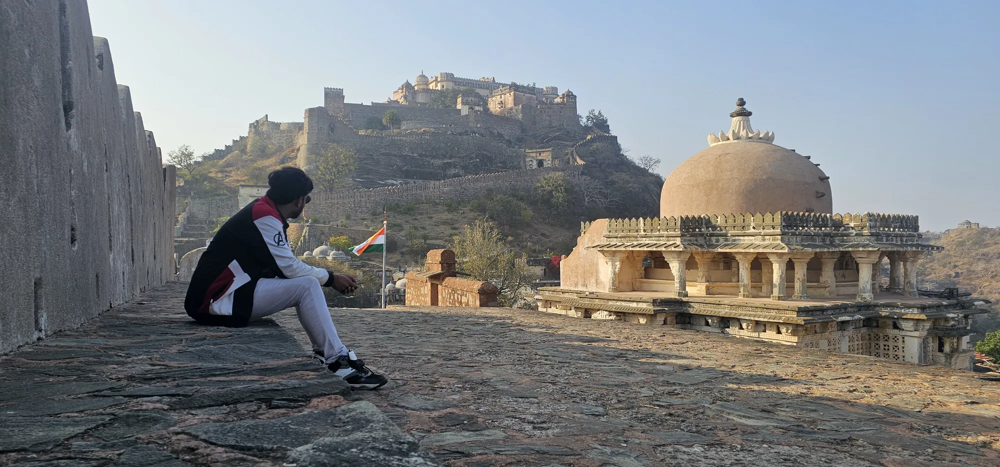

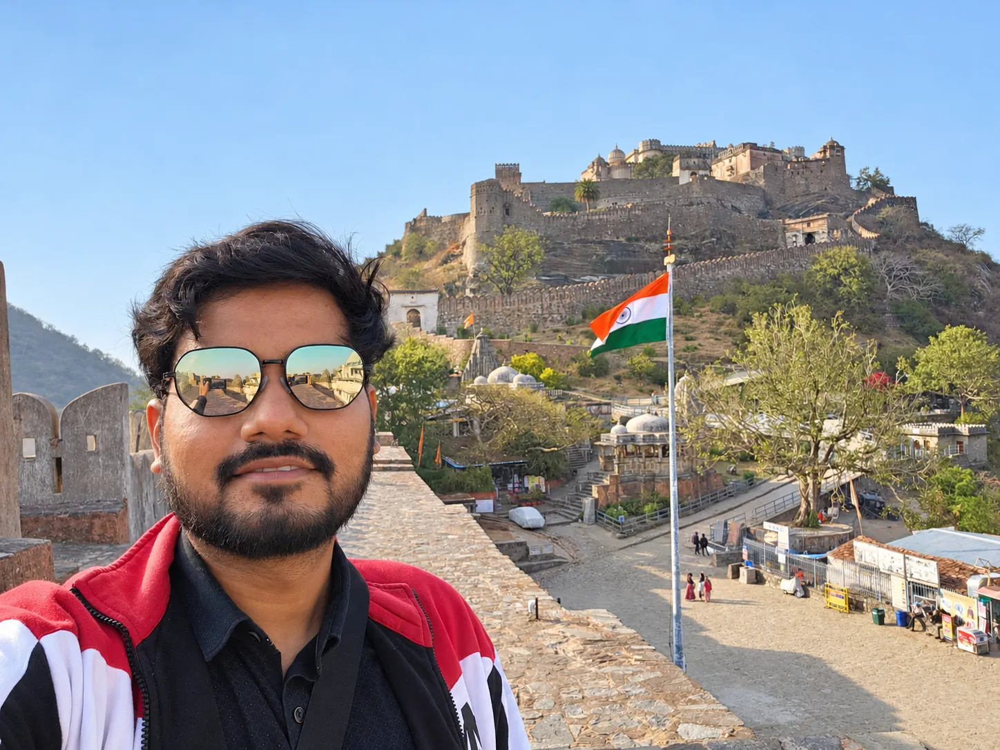
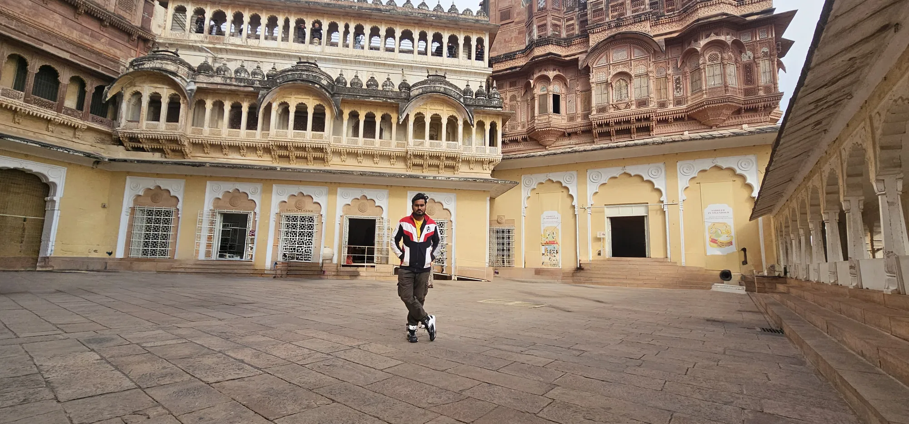
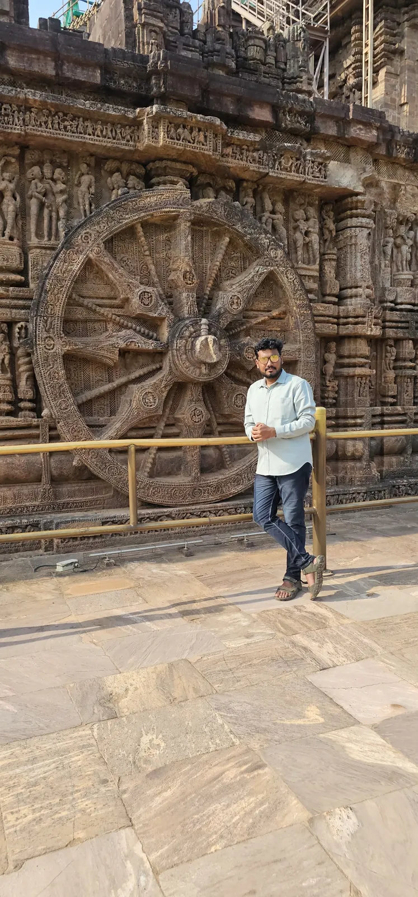
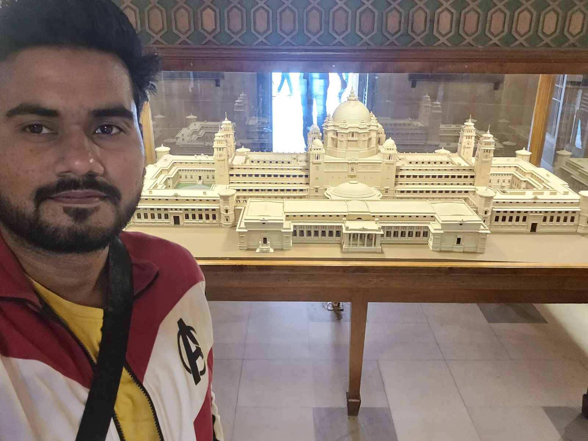
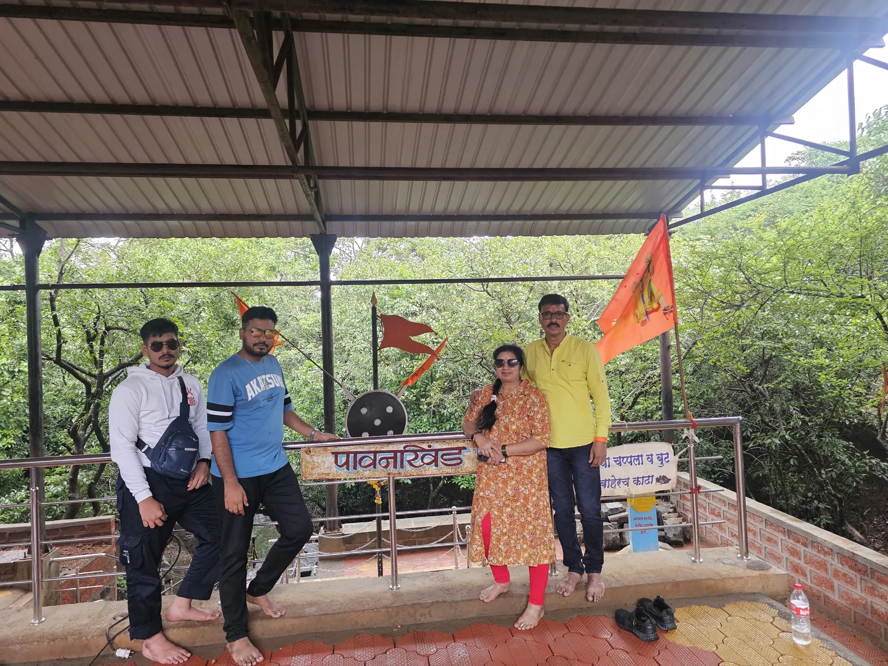
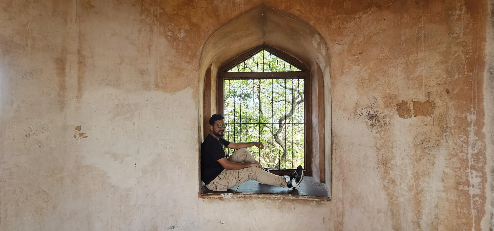
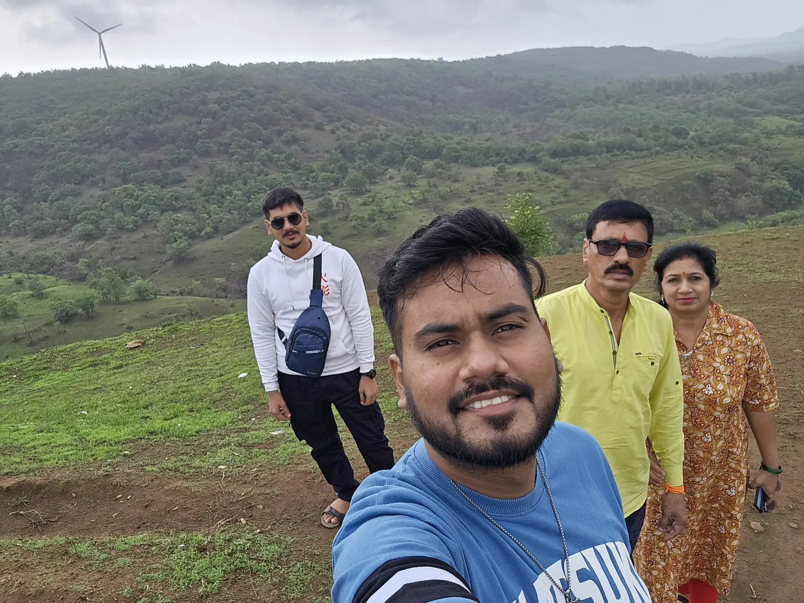
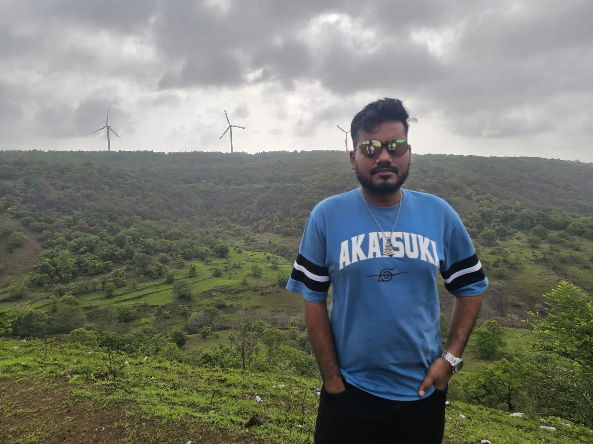
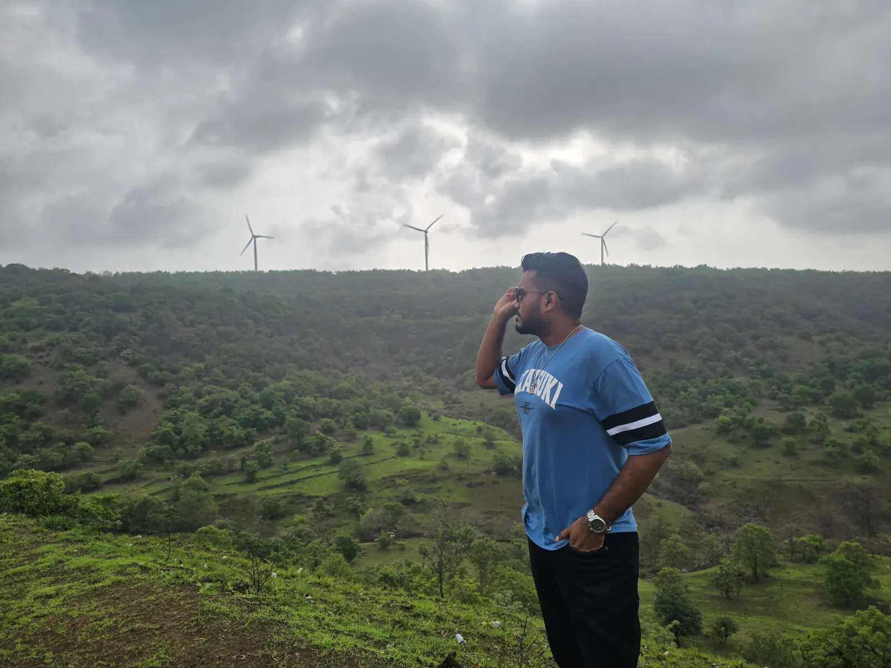
…and a thousand more photos on my phone.
Tried, tested and highly recommended. Hover a note for a postcard.
The highest point of the Aravallis — all of it at your feet.
A crescent of sand tucked between the cliffs.
Somnath — don't miss it, and spend time there.
Bhimashankar — remember to get the incense sticks made of bel patra.
Trimbakeshwar — divinity 🥰
Where stone remembers everything — and still feels calm.
Dwarkadhish — go between 5 and 6 to see the flag change. Amazing experience.
Tirupati — a must, but book darshan in advance.
Vitthal — take a holy dip in the Chandrabhaga.
Khatu Shyam — “Haare ka Sahara”, the support of the defeated.
Visit every Shiva temple around it — it was sage Shukracharya's vedhshala, his observatory.
Sea on one side, green on the other, curves all the way.
Undefeated… for now. I'm yet to visit Sikkim.
The great bird from the Ramayana, reborn in stone.
Carved sandstone, mirrored halls, endless courtyards.
I refuse to pick one. Don't make me.
Ganpati Bappa Morya! And then the lights.
“Not all those who wander are lost.”
— J. R. R. Tolkien